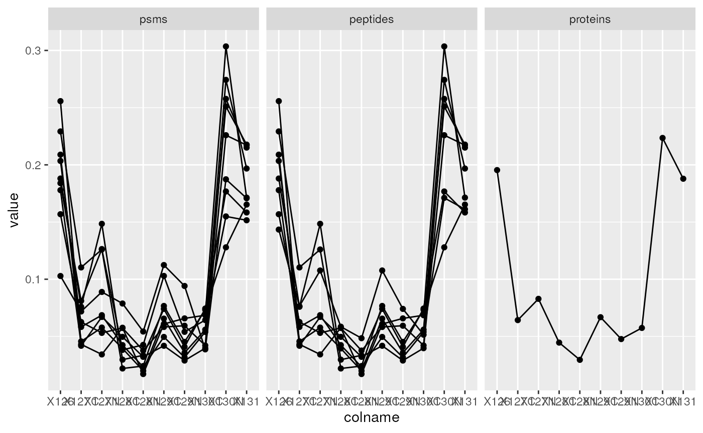
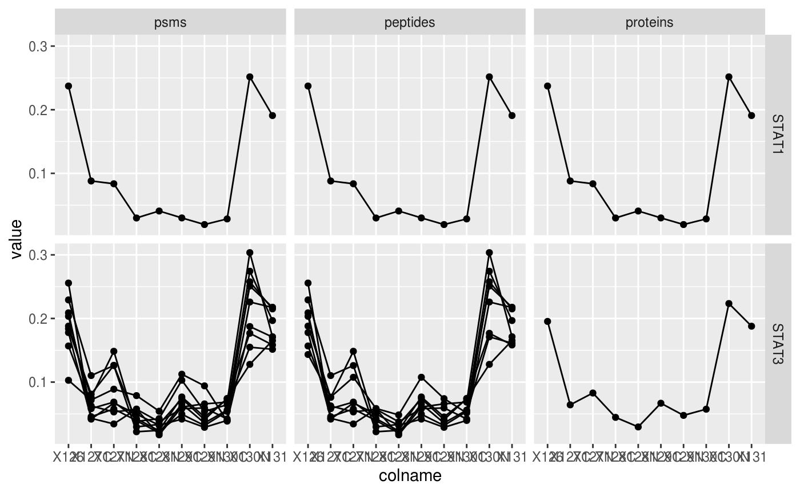

vignettes/QFeatures.Rmd
QFeatures.RmdAbstract
This vignette describes the functionality implemented in the QFeatures package. QFeatures provides infrastructure to manage and process quantitative features for high-throughput mass spectrometry assays, including proteomics and metabolomics. This vignette is distributed under a CC BY-SA license.
The QFeatures package provides infrastructure (that is
classes to store data and the methods to process and manipulate them) to
manage and analyse quantitative features from mass spectrometry
experiments. It is based on the SummarizedExperiment and
MultiAssayExperiment classes. Assays in a QFeatures object
have a hierarchical relation: proteins are composed of peptides,
themselves produced by spectra, as depicted in figure
@ref(fig:featuresplot). Throughout the aggregation and processing of
these data, the relations between assays are tracked and recorded, thus
allowing users to easily navigate across spectra, peptide and protein
quantitative data.
Conceptual representation of a QFeatures object and the
aggregative relation between different assays.
In the following sections, we are going to demonstrate how to create
a single-assay QFeatures objects starting from a
spreadsheet, how to compute the next assays (peptides and proteins), and
how these can be manipulated and explored.
QFeatures object
While QFeatures objects can be created manually (see
?QFeatures for details), most users will probably possess
quantitative data in a spreadsheet or a dataframe. In such cases, the
easiest is to use the readQFeatures function to extract the
quantitative data and metadata columns. Below, we load the
hlpsms dataframe that contains data for 28 PSMs from the
TMT-10plex hyperLOPIT spatial proteomics experiment from (Christoforou et al. 2016). The
ecol argument specifies that columns 1 to 10 contain
quantitation data, and that the assay should be named psms
in the returned QFeatures object, to reflect the nature of
the data.
data(hlpsms)
hl <- readQFeatures(hlpsms, ecol = 1:10, name = "psms")
hl## An instance of class QFeatures containing 1 assays:
## [1] psms: SummarizedExperiment with 3010 rows and 10 columnsBelow, we see that we can extract an assay using its index or its
name. The individual assays are stored as SummarizedExperiment
object and further access its quantitative data and metadata using the
assay and rowData functions
hl[[1]]## class: SummarizedExperiment
## dim: 3010 10
## metadata(0):
## assays(1): ''
## rownames(3010): 1 2 ... 3009 3010
## rowData names(18): Sequence ProteinDescriptions ... RTmin markers
## colnames(10): X126 X127C ... X130N X131
## colData names(0):
hl[["psms"]]## class: SummarizedExperiment
## dim: 3010 10
## metadata(0):
## assays(1): ''
## rownames(3010): 1 2 ... 3009 3010
## rowData names(18): Sequence ProteinDescriptions ... RTmin markers
## colnames(10): X126 X127C ... X130N X131
## colData names(0):
head(assay(hl[["psms"]]))## X126 X127C X127N X128C X128N X129C
## 1 0.12283431 0.08045915 0.070804055 0.09386901 0.051815695 0.13034383
## 2 0.35268185 0.14162381 0.167523880 0.07843497 0.071087436 0.03214548
## 3 0.01546089 0.16142297 0.086938133 0.23120844 0.114664348 0.09610188
## 4 0.04702854 0.09288723 0.102012167 0.11125409 0.067969116 0.14155358
## 5 0.01044693 0.15866147 0.167315736 0.21017494 0.147946673 0.07088253
## 6 0.04955362 0.01215244 0.002477681 0.01297833 0.002988949 0.06253195
## X129N X130C X130N X131
## 1 0.17540095 0.040068658 0.11478839 0.11961594
## 2 0.06686260 0.031961793 0.02810434 0.02957384
## 3 0.15977819 0.010127118 0.08059400 0.04370403
## 4 0.18015910 0.035329902 0.12166589 0.10014038
## 5 0.17555789 0.007088253 0.02884754 0.02307803
## 6 0.01726511 0.172651119 0.37007905 0.29732174
head(rowData(hl[["psms"]]))## DataFrame with 6 rows and 18 columns
## Sequence ProteinDescriptions NbProteins ProteinGroupAccessions
## <character> <character> <integer> <character>
## 1 SQGEIDk Tetratrico... 1 Q8BYY4
## 2 YEAQGDk Vacuolar p... 1 P46467
## 3 TTScDTk C-type man... 1 Q64449
## 4 aEELESR Liprin-alp... 1 P60469
## 5 aQEEAIk Isoform 2 ... 2 P13597-2
## 6 dGAVDGcR Structural... 1 Q6P5D8
## Modifications qValue PEP IonScore NbMissedCleavages
## <character> <numeric> <numeric> <integer> <integer>
## 1 K7(TMT6ple... 0.008 0.11800 27 0
## 2 K7(TMT6ple... 0.001 0.01070 27 0
## 3 C4(Carbami... 0.008 0.11800 11 0
## 4 N-Term(TMT... 0.002 0.04450 24 0
## 5 N-Term(Car... 0.001 0.00850 36 0
## 6 N-Term(TMT... 0.000 0.00322 26 0
## IsolationInterference IonInjectTimems Intensity Charge mzDa MHDa
## <integer> <integer> <numeric> <integer> <numeric> <numeric>
## 1 0 70 335000 2 503.274 1005.54
## 2 0 70 926000 2 520.267 1039.53
## 3 0 70 159000 2 521.258 1041.51
## 4 0 70 232000 2 531.785 1062.56
## 5 0 70 212000 2 537.804 1074.60
## 6 0 70 865000 2 539.761 1078.51
## DeltaMassPPM RTmin markers
## <numeric> <numeric> <character>
## 1 -0.38 24.02 unknown
## 2 0.61 18.85 unknown
## 3 1.11 10.17 unknown
## 4 0.35 29.18 unknown
## 5 1.70 25.56 Plasma mem...
## 6 -0.67 21.27 Nucleus - ...For further details on how to manipulate such objects, refer to the MultiAssayExperiment (Ramos et al. 2017) and SummerizedExperiment (Morgan et al. 2019) packages.
As illustrated in figure @ref(fig:featuresplot), an central
characteristic of QFeatures objects is the aggregative
relation between their assays. This can be obtained with the
aggregateFeatures function that will aggregate quantitative
features from one assay into a new one. In the next code chunk, we
aggregate PSM-level data into peptide by grouping all PSMs that were
matched the same peptide sequence. Below, the aggregation function is
set, as an example, to the mean. The new assay is named
peptides.
hl <- aggregateFeatures(hl, "psms", "Sequence", name = "peptides", fun = colMeans)## Your row data contain missing values. Please read the relevant
## section(s) in the aggregateFeatures manual page regarding the effects
## of missing values on data aggregation.
hl## An instance of class QFeatures containing 2 assays:
## [1] psms: SummarizedExperiment with 3010 rows and 10 columns
## [2] peptides: SummarizedExperiment with 2923 rows and 10 columns
hl[["peptides"]]## class: SummarizedExperiment
## dim: 2923 10
## metadata(0):
## assays(2): assay aggcounts
## rownames(2923): aAADADVSLHNFSAR aAADPSEk ... yYSFFDLNPk YYSIASSSk
## rowData names(7): Sequence ProteinDescriptions ... markers .n
## colnames(10): X126 X127C ... X130N X131
## colData names(0):Below, we repeat the aggregation operation by grouping peptides into proteins as defined by the ProteinGroupAccessions variable.
hl <- aggregateFeatures(hl, "peptides", "ProteinGroupAccessions", name = "proteins", fun = colMeans)
hl## An instance of class QFeatures containing 3 assays:
## [1] psms: SummarizedExperiment with 3010 rows and 10 columns
## [2] peptides: SummarizedExperiment with 2923 rows and 10 columns
## [3] proteins: SummarizedExperiment with 1596 rows and 10 columns
hl[["proteins"]]## class: SummarizedExperiment
## dim: 1596 10
## metadata(0):
## assays(2): assay aggcounts
## rownames(1596): A2A432 A2A6Q5-3 ... Q9Z2Z9 Q9Z315
## rowData names(3): ProteinGroupAccessions markers .n
## colnames(10): X126 X127C ... X130N X131
## colData names(0):The sample assayed in a QFeatures object can be
documented in the colData slot. The hl data
doens’t currently possess any sample metadata. These can be addedd as a
new DataFrame with matching names (i.e. the
DataFrame rownames must be identical assay’s colnames) or
can be added one variable at at time, as shown below.
colData(hl)## DataFrame with 10 rows and 0 columns
hl$tag <- c("126", "127N", "127C", "128N", "128C", "129N", "129C",
"130N", "130C", "131")
colData(hl)## DataFrame with 10 rows and 1 column
## tag
## <character>
## X126 126
## X127C 127N
## X127N 127C
## X128C 128N
## X128N 128C
## X129C 129N
## X129N 129C
## X130C 130N
## X130N 130C
## X131 131The QFeatures package provides some utility functions
that streamline the accession and manipulation of the feature
metadata.
The feature metadata, more generally referred to as
rowData in the Bioconductor ecosystem, is specific to each
assay in a QFeatures object. Therefore there are as many
rowData tables as there are assays.
rowDataNames provides a list where each element contains
the name of the rowData columns available in the
corresponding assay.
rowDataNames(hl)## CharacterList of length 3
## [["psms"]] Sequence ProteinDescriptions NbProteins ... RTmin markers
## [["peptides"]] Sequence ProteinDescriptions NbProteins ... markers .n
## [["proteins"]] ProteinGroupAccessions markers .nWe saw above how to get the rowData from an assay, but
we can also extract the rowData for all assays by calling
the function on the QFeautures object directly. Similarly
to rowDataNames, a list is returned where each element
contains the rowData available in the corresponding
assay.
rowData(hl)## DataFrameList of length 3
## names(3): psms peptides proteinsIn some cases, we are interested in extracting the
rowData as a single data table. This is easily performed
using the rbindRowData function. The function will
automatically select the columns that are common to all selected
assays.
rbindRowData(hl, i = c("peptides", "proteins"))## DataFrame with 4519 rows and 5 columns
## assay rowname ProteinGroupAccessions markers .n
## <character> <character> <character> <character> <integer>
## 1 peptides aAADADVSLH... P0C7N9 unknown 1
## 2 peptides aAADPSEk Q6P9Q6 unknown 1
## 3 peptides aAAQFLTSTW... Q9D7Z3 Nucleus - ... 1
## 4 peptides aAASGAAGDk... A2AGT5 unknown 1
## 5 peptides AAAVSTEGk Q9ERE8 unknown 1
## ... ... ... ... ... ...
## 4515 proteins Q9Z2V5 Q9Z2V5 unknown 1
## 4516 proteins Q9Z2W0 Q9Z2W0 unknown 1
## 4517 proteins Q9Z2X1 Q9Z2X1 unknown 1
## 4518 proteins Q9Z2Z9 Q9Z2Z9 unknown 3
## 4519 proteins Q9Z315 Q9Z315 unknown 1We can also replace and add columns in the rowData. This
requires to provide a List where the names of the
List point to the assay to be updated and the elements of
the List contain DataFrames with the
replacement values. If the DataFrame contains a column that
is not present in the rowData, that column will get added
to the rowData. For instance, let’s add a
rowData variables with the mean protein expression as well
as the associated standard deviation. First, we need to create the
DataFrame with the mean expression.
Then, we create the list and name the element proteins
so that the new data is added to the rowData of the
proteins assay. To add the list, we insert it back into the
rowData.
rowData(hl) <- List(proteins = dF)As shown below, the new mean and sd
variables have been added to the rowData of the
proteins assay.
rowData(hl)[["proteins"]]## DataFrame with 1596 rows and 5 columns
## ProteinGroupAccessions markers .n mean sd
## <character> <character> <integer> <numeric> <numeric>
## A2A432 A2A432 unknown 1 1 0.0822395
## A2A6Q5-3 A2A6Q5-3 unknown 1 1 0.0891478
## A2A8L5 A2A8L5 unknown 2 1 0.1009041
## A2AF47 A2AF47 unknown 1 1 0.0749159
## A2AGT5 A2AGT5 unknown 6 1 0.1065126
## ... ... ... ... ... ...
## Q9Z2V5 Q9Z2V5 unknown 1 1 0.0882136
## Q9Z2W0 Q9Z2W0 unknown 1 1 0.0565321
## Q9Z2X1 Q9Z2X1 unknown 1 1 0.1539930
## Q9Z2Z9 Q9Z2Z9 unknown 3 1 0.0930030
## Q9Z315 Q9Z315 unknown 1 1 0.1234534Note that you can also replace an existing column in the
rowData by naming the column name in the
DataFrame after the column to replace.
One particularity of the QFeatures infrastructure is
that the features of the constitutive assays are linked through an
aggregative relation. This relation is recorded when creating new assays
with aggregateFeatures and is exploited when subsetting
QFeature by their feature names.
In the example below, we are interested in the Stat3B isoform of the Signal transducer and activator of transcription 3 (STAT3) with accession number P42227-2. This accession number corresponds to a feature name in the proteins assay. But this protein row was computed from 8 peptide rows in the peptides assay, themselves resulting from the aggregation of 8 rows in the psms assay.
stat3 <- hl["P42227-2", , ]
stat3## An instance of class QFeatures containing 3 assays:
## [1] psms: SummarizedExperiment with 9 rows and 10 columns
## [2] peptides: SummarizedExperiment with 8 rows and 10 columns
## [3] proteins: SummarizedExperiment with 1 rows and 10 columnsWe can easily visualise this new QFeatures object using
ggplot2 once converted into a data.frame. See
the visualization vignette for more details about data exploration from
a QFeatures object.
stat3_df <- data.frame(longFormat(stat3))
stat3_df$assay <- factor(stat3_df$assay,
levels = c("psms", "peptides", "proteins"))
library("ggplot2")
ggplot(data = stat3_df,
aes(x = colname,
y = value,
group = rowname)) +
geom_line() + geom_point() +
facet_grid(~ assay)
Below we repeat the same operation for the Signal transducer and
activator of transcription 1 (STAT1) and 3 (STAT3) accession numbers,
namely P42227-2 and P42225. We obtain a new QFeatures
instance containing 2 proteins, 9 peptides and 10 PSMS. From this, we
can readily conclude that STAT1 was identified by a single
PSM/peptide.
stat <- hl[c("P42227-2", "P42225"), , ]
stat## An instance of class QFeatures containing 3 assays:
## [1] psms: SummarizedExperiment with 10 rows and 10 columns
## [2] peptides: SummarizedExperiment with 9 rows and 10 columns
## [3] proteins: SummarizedExperiment with 2 rows and 10 columnsBelow, we visualise the expression profiles for the two proteins.
stat_df <- data.frame(longFormat(stat))
stat_df$stat3 <- ifelse(stat_df$rowname %in% stat3_df$rowname,
"STAT3", "STAT1")
stat_df$assay <- factor(stat_df$assay,
levels = c("psms", "peptides", "proteins"))
ggplot(data = stat_df,
aes(x = colname,
y = value,
group = rowname)) +
geom_line() + geom_point() +
facet_grid(stat3 ~ assay)
The subsetting by feature names is also available as a call to the
subsetByFeature function, for use with the pipe
operator.
hl |>
subsetByFeature("P42227-2")## An instance of class QFeatures containing 3 assays:
## [1] psms: SummarizedExperiment with 9 rows and 10 columns
## [2] peptides: SummarizedExperiment with 8 rows and 10 columns
## [3] proteins: SummarizedExperiment with 1 rows and 10 columns
hl |>
subsetByFeature(c("P42227-2", "P42225"))## An instance of class QFeatures containing 3 assays:
## [1] psms: SummarizedExperiment with 10 rows and 10 columns
## [2] peptides: SummarizedExperiment with 9 rows and 10 columns
## [3] proteins: SummarizedExperiment with 2 rows and 10 columnsand possibly
hl |>
subsetByFeature("P42227-2") |>
longFormat() |>
as.data.frame |>
ggplot(aes(x = colname,
y = value,
group = rowname)) +
geom_line() +
facet_grid(~ assay)to reproduce the line plot.
QFeatures is assays can also be filtered based on variables in their
respective row data slots using the filterFeatures
function. The filters can be defined using the formula interface or
using AnnotationFilter objects from the
r BiocStyle::Biocpkg("AnnotationFilter") package (Morgan and Rainer 2019). In addition to the
pre-defined filters (such as SymbolFilter,
ProteinIdFilter, … that filter on gene symbol, protein
identifier, …), this package allows users to define arbitrary character
or numeric filters using the VariableFilter.
mito_filter <- VariableFilter(field = "markers",
value = "Mitochondrion",
condition = "==")
mito_filter## class: CharacterVariableFilter
## condition: ==
## value: Mitochondrion
qval_filter <- VariableFilter(field = "qValue",
value = 0.001,
condition = "<=")
qval_filter## class: NumericVariableFilter
## condition: <=
## value: 0.001These filter can then readily be applied to all assays’ row data
slots. The mito_filter will return all PSMs, peptides and
proteins that were annotated as localising to the mitochondrion.
filterFeatures(hl, mito_filter)## 'markers' found in 3 out of 3 assay(s)## An instance of class QFeatures containing 3 assays:
## [1] psms: SummarizedExperiment with 167 rows and 10 columns
## [2] peptides: SummarizedExperiment with 162 rows and 10 columns
## [3] proteins: SummarizedExperiment with 113 rows and 10 columnsThe qval_filter, on the other hand, will only return a
subset of PSMs, because the qValue variable is only present
in the psms assays. The q-values are only relevant to PSMs
and that variable was dropped from the other assays.
filterFeatures(hl, qval_filter)## 'qValue' found in 1 out of 3 assay(s)
## No filter applied to the following assay(s) because one or more filtering variables are missing in the rowData: peptides, proteins.
## You can control whether to remove or keep the features using the 'keep' argument (see '?filterFeature').## An instance of class QFeatures containing 3 assays:
## [1] psms: SummarizedExperiment with 2466 rows and 10 columns
## [2] peptides: SummarizedExperiment with 0 rows and 10 columns
## [3] proteins: SummarizedExperiment with 0 rows and 10 columnsThe same filters can be created using the forumla interface:
filterFeatures(hl, ~ markers == "Mitochondrion")## 'markers' found in 3 out of 3 assay(s)## An instance of class QFeatures containing 3 assays:
## [1] psms: SummarizedExperiment with 167 rows and 10 columns
## [2] peptides: SummarizedExperiment with 162 rows and 10 columns
## [3] proteins: SummarizedExperiment with 113 rows and 10 columns
filterFeatures(hl, ~ qValue <= 0.001)## 'qValue' found in 1 out of 3 assay(s)
## No filter applied to the following assay(s) because one or more filtering variables are missing in the rowData: peptides, proteins.
## You can control whether to remove or keep the features using the 'keep' argument (see '?filterFeature').## An instance of class QFeatures containing 3 assays:
## [1] psms: SummarizedExperiment with 2466 rows and 10 columns
## [2] peptides: SummarizedExperiment with 0 rows and 10 columns
## [3] proteins: SummarizedExperiment with 0 rows and 10 columns## R version 4.3.1 (2023-06-16)
## Platform: x86_64-pc-linux-gnu (64-bit)
## Running under: Ubuntu 22.04.3 LTS
##
## Matrix products: default
## BLAS: /usr/lib/x86_64-linux-gnu/openblas-pthread/libblas.so.3
## LAPACK: /usr/lib/x86_64-linux-gnu/openblas-pthread/libopenblasp-r0.3.20.so; LAPACK version 3.10.0
##
## locale:
## [1] LC_CTYPE=en_US.UTF-8 LC_NUMERIC=C
## [3] LC_TIME=en_US.UTF-8 LC_COLLATE=en_US.UTF-8
## [5] LC_MONETARY=en_US.UTF-8 LC_MESSAGES=en_US.UTF-8
## [7] LC_PAPER=en_US.UTF-8 LC_NAME=C
## [9] LC_ADDRESS=C LC_TELEPHONE=C
## [11] LC_MEASUREMENT=en_US.UTF-8 LC_IDENTIFICATION=C
##
## time zone: UTC
## tzcode source: system (glibc)
##
## attached base packages:
## [1] stats4 stats graphics grDevices utils datasets methods
## [8] base
##
## other attached packages:
## [1] ggplot2_3.4.3 QFeatures_1.11.2
## [3] MultiAssayExperiment_1.27.4 SummarizedExperiment_1.31.1
## [5] Biobase_2.61.0 GenomicRanges_1.53.1
## [7] GenomeInfoDb_1.37.2 IRanges_2.35.2
## [9] S4Vectors_0.39.1 BiocGenerics_0.47.0
## [11] MatrixGenerics_1.13.1 matrixStats_1.0.0
## [13] BiocStyle_2.29.1
##
## loaded via a namespace (and not attached):
## [1] gtable_0.3.4 xfun_0.40 bslib_0.5.1
## [4] lattice_0.21-8 generics_0.1.3 vctrs_0.6.3
## [7] tools_4.3.1 bitops_1.0-7 fansi_1.0.4
## [10] tibble_3.2.1 highr_0.10 cluster_2.1.4
## [13] pkgconfig_2.0.3 BiocBaseUtils_1.3.2 Matrix_1.6-1
## [16] desc_1.4.2 lifecycle_1.0.3 GenomeInfoDbData_1.2.10
## [19] farver_2.1.1 compiler_4.3.1 stringr_1.5.0
## [22] textshaping_0.3.6 munsell_0.5.0 clue_0.3-64
## [25] htmltools_0.5.6 sass_0.4.7 RCurl_1.98-1.12
## [28] yaml_2.3.7 lazyeval_0.2.2 pillar_1.9.0
## [31] pkgdown_2.0.7.9000 crayon_1.5.2 jquerylib_0.1.4
## [34] MASS_7.3-60 DelayedArray_0.27.10 cachem_1.0.8
## [37] abind_1.4-5 tidyselect_1.2.0 digest_0.6.33
## [40] stringi_1.7.12 dplyr_1.1.2 purrr_1.0.2
## [43] bookdown_0.35 labeling_0.4.2 rprojroot_2.0.3
## [46] fastmap_1.1.1 grid_4.3.1 colorspace_2.1-0
## [49] cli_3.6.1 SparseArray_1.1.11 magrittr_2.0.3
## [52] S4Arrays_1.1.5 utf8_1.2.3 withr_2.5.0
## [55] scales_1.2.1 rmarkdown_2.24 XVector_0.41.1
## [58] igraph_1.5.1 ragg_1.2.5 memoise_2.0.1
## [61] evaluate_0.21 knitr_1.43 rlang_1.1.1
## [64] glue_1.6.2 BiocManager_1.30.22 jsonlite_1.8.7
## [67] AnnotationFilter_1.25.0 R6_2.5.1 systemfonts_1.0.4
## [70] fs_1.6.3 zlibbioc_1.47.0 ProtGenerics_1.33.1
## [73] MsCoreUtils_1.13.1